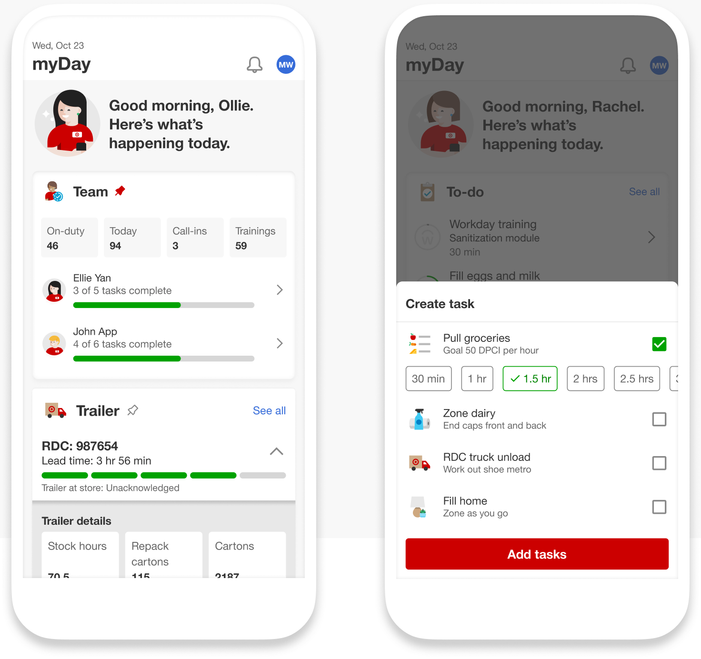
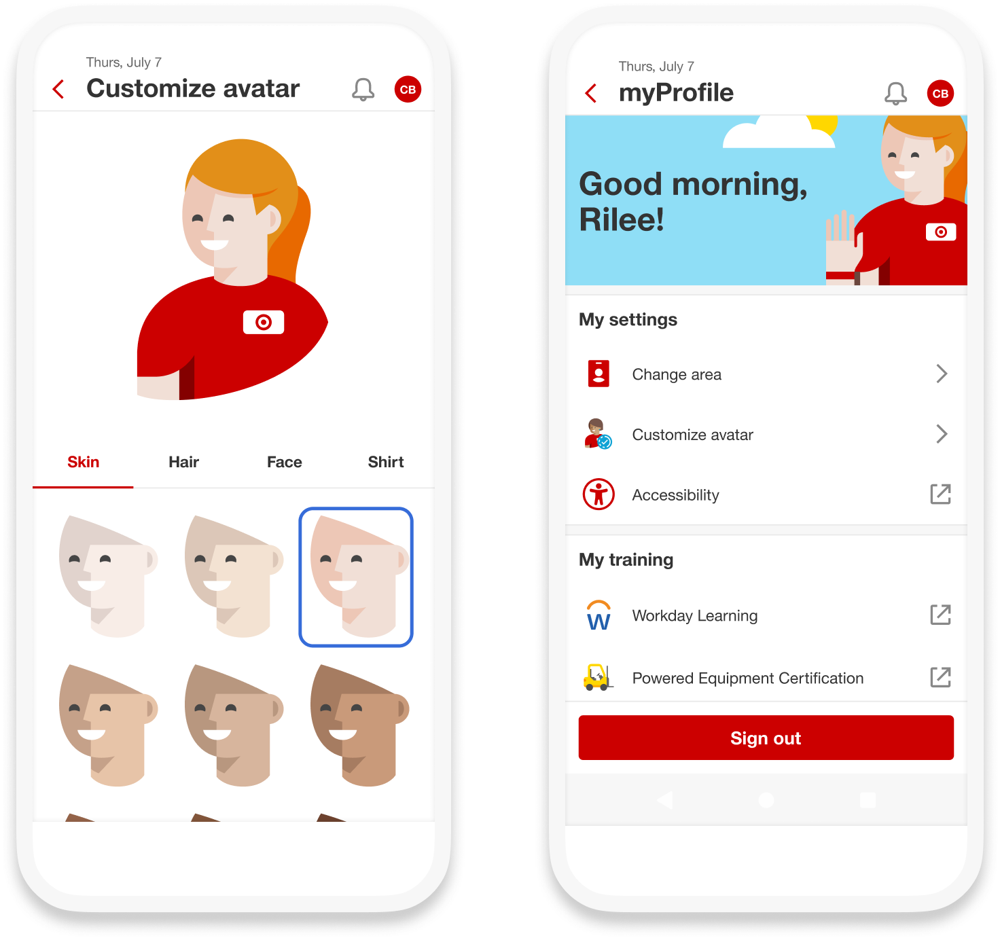
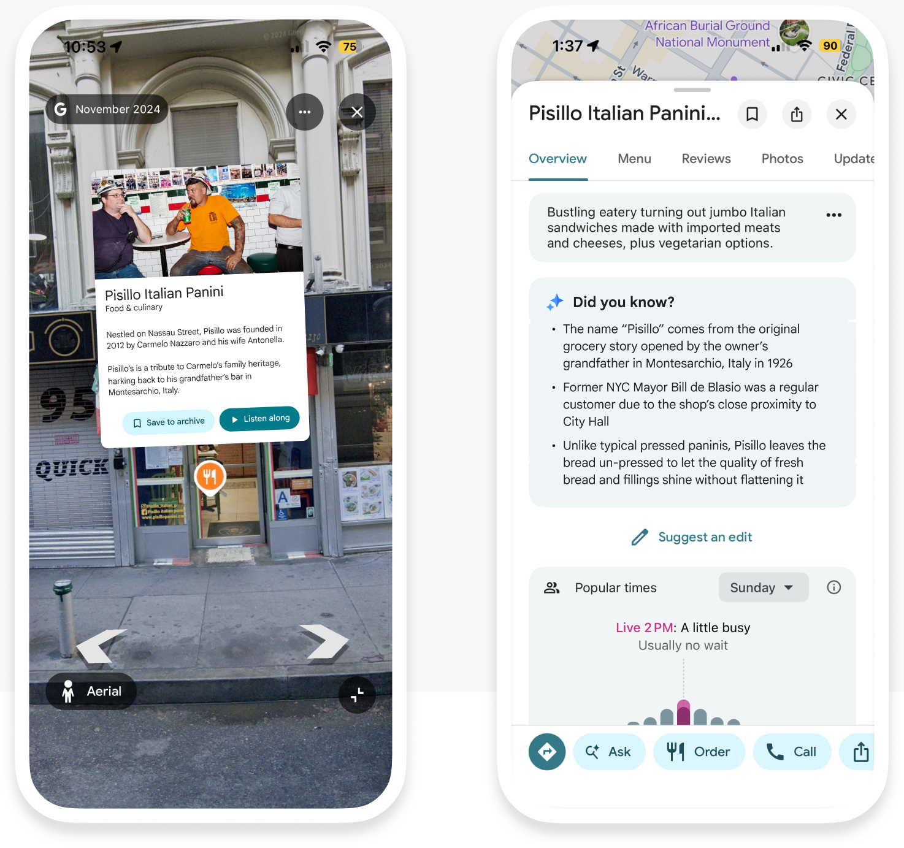
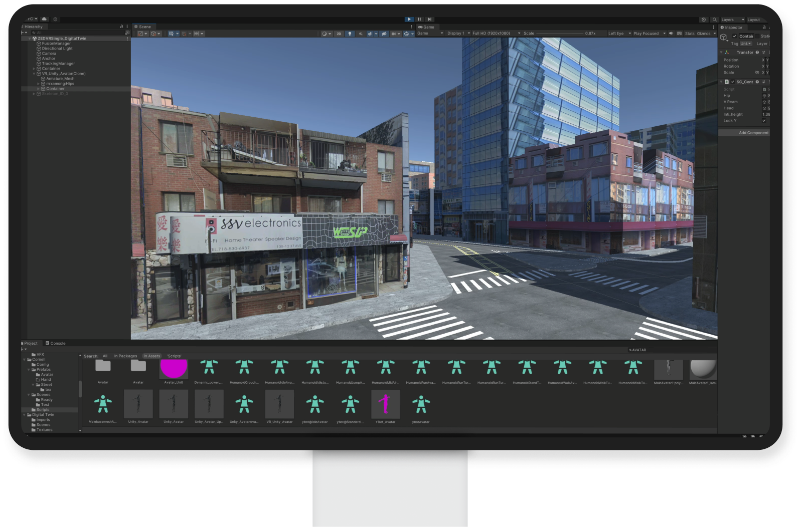
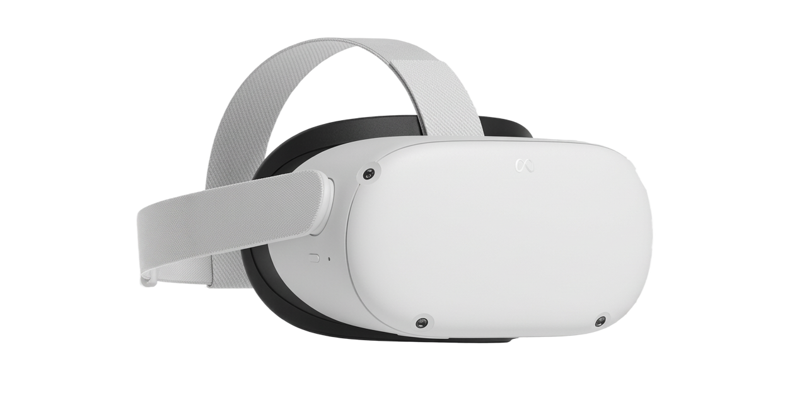

Task Management
Flexible workload management for Target store leaders


Culture Walk
Cultural discovery for citygoers, built into Google Maps

NYC Digital Twins
Studying AV-pedestrian interactions in a safe and controlled environment

